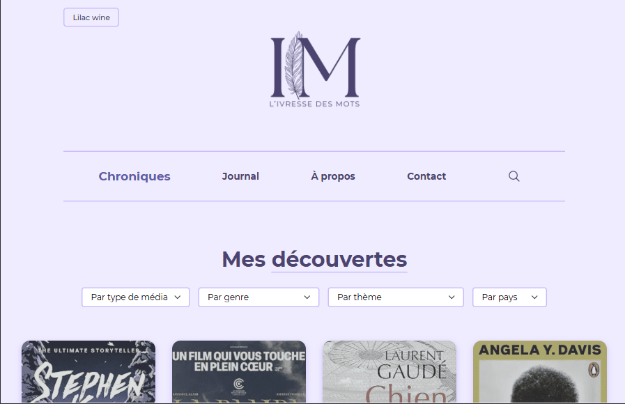
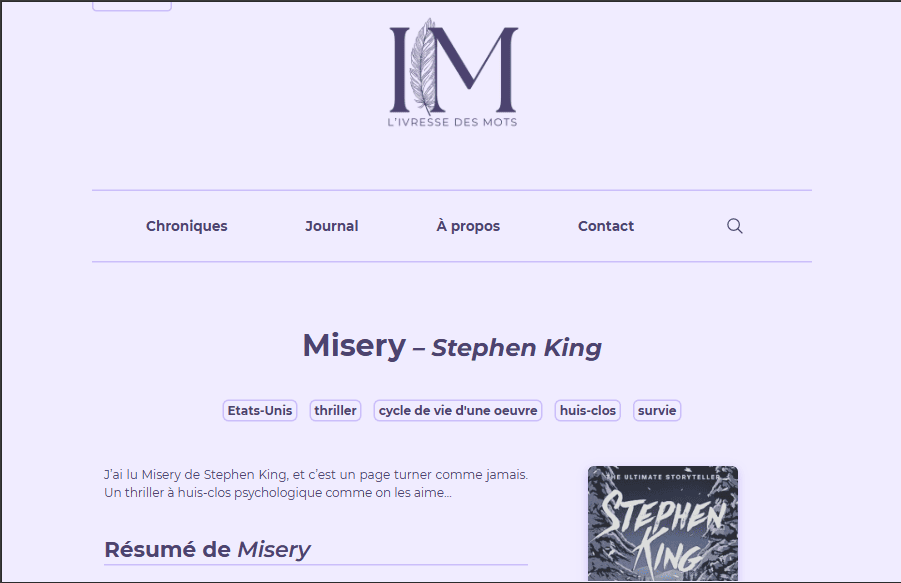
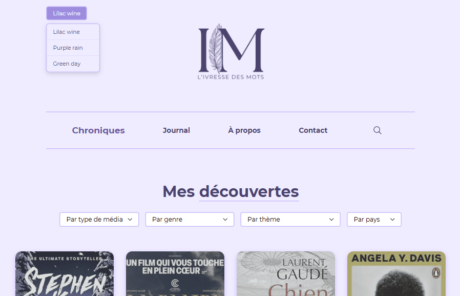
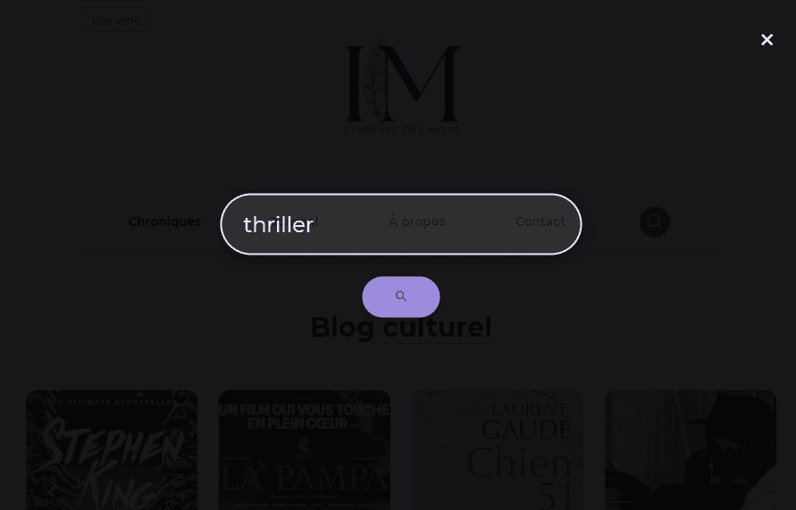
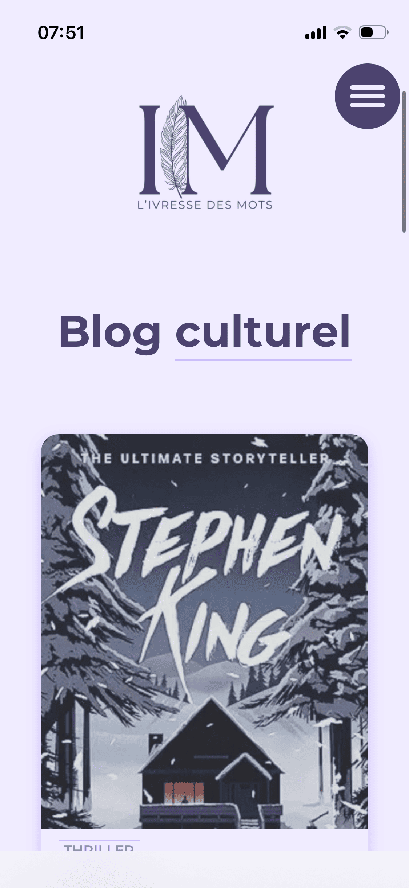
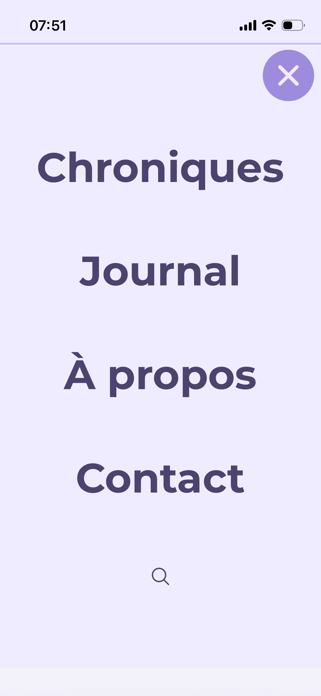
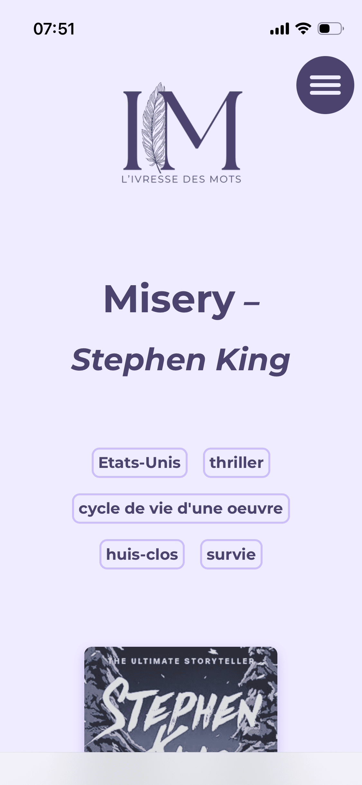
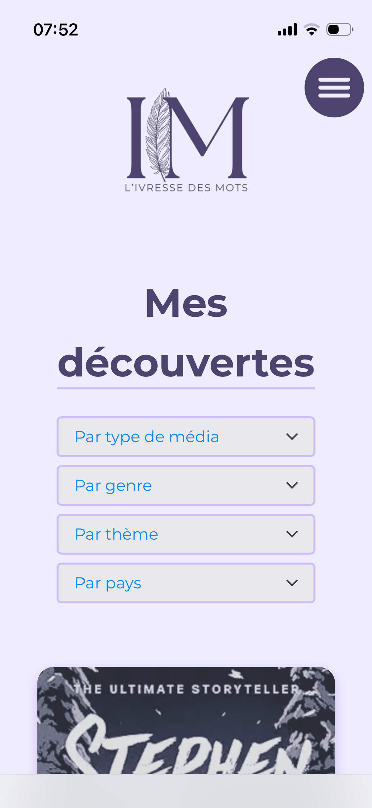

L'ivresse des mots
A custom WordPress theme built from scratch for a French literary and cultural blog.
Covering books, films, series, and podcasts — with a personal, warm editorial voice
and a strong focus on performance, accessibility, and privacy.
Features
- Custom post types for reviews (chroniques) and artist profiles (portraits)
- Tri-color theme switcher (Lilac Wine, Purple Rain, Green Day) with localStorage persistence
- Client-side filtering and pagination across listing pages
- Dynamic sidebar system adapting to media type (book, film, series, podcast)
- Star rating system with half-star support
- Pods relational fields linking reviews to artist profiles
- Extended search across custom taxonomies (genre, nationality, theme)
Technical Stack
- Frontend: HTML5, CSS3 (custom properties, responsive), vanilla JavaScript
- Backend: PHP 8, WordPress with custom theme (TurningPages)
- Database: MySQL via WordPress + Pods + ACF
- Hosting: Hostinger with LiteSpeed Cache
- SEO: Rank Math with custom variables
- Privacy: GDPR compliant — self-hosted fonts, cookieless analytics, hCaptcha
- Version Control: Git (local → GitHub → SSH deployment)
Desktop View





The Challenge
The core challenge was building a WordPress theme entirely from scratch — starting from static HTML/CSS/JS prototypes, then converting everything to dynamic PHP templates while maintaining a modular, maintainable architecture.
The blog needed to handle four distinct media types (books, films, series, podcasts) with different metadata for each, all within a single review system. I designed a sidebar router that dynamically loads the correct metadata template based on the media type taxonomy, with shared components (star rating, sources, spoiler toggle) extracted as reusable template parts.
The tri-color theme switcher required careful coordination between an inline script in the <head> (preventing flash of wrong theme), a JavaScript module handling user interactions, and a PHP-based logo manager that serves the correct logo variant for each color scheme via wp_localize_script.
Client-side filtering presented an interesting trade-off: loading all posts at once (posts_per_page = -1) for instant filtering versus server-side pagination for lighter initial loads. Given the blog's scale, client-side was the right choice — filters respond instantly and pagination is handled in JavaScript.
Throughout the project, every decision was weighed against security, performance, and SEO best practices: filemtime-based cache busting, proper output escaping, self-hosted fonts for GDPR compliance, conditional asset loading, and extended search with prepared SQL statements.
Architecture
The theme follows a modular file structure with clear separation of concerns: setup files (theme supports, asset enqueuing, security hardening), function files (CPT registration, taxonomy helpers, search configuration), and a deep template-parts hierarchy for maximum reusability.
All theme functions are prefixed with tp_ to prevent namespace collisions.
A comprehensive code review added English documentation comments across every PHP and JavaScript file, making the codebase fully maintainable and ready for collaboration.
Responsive Design
The blog adapts seamlessly from desktop to mobile, with a fullscreen navigation menu and optimized card layouts



